GUÍA GRATIS
Los 7 errores que frenan tu progreso en el gimnasio
Por qué entrenas y no cambias, y cómo arreglarlo desde mañana. Explicado fácil, con Tor y con los estudios detrás.
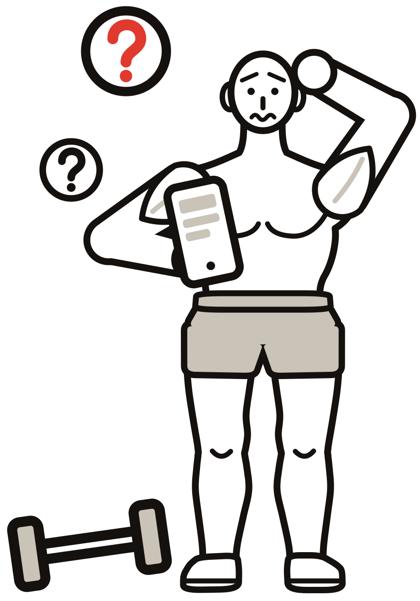
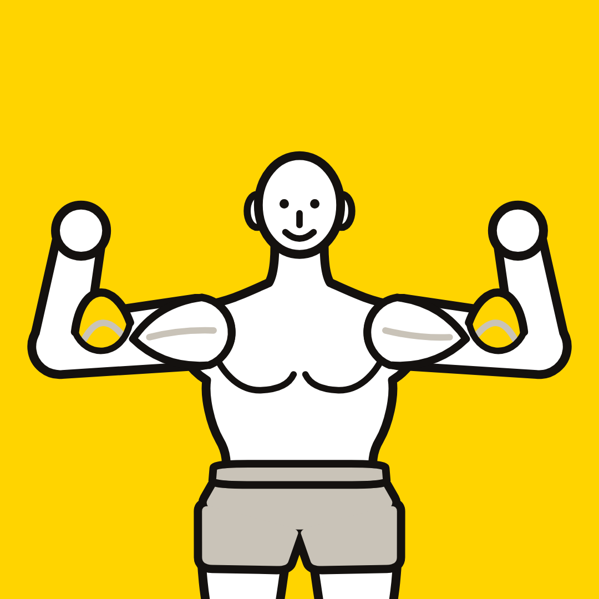
ENTRENA CON TOR
por Torvick · @eltorvick
Entrena con TorAntes de empezar
Antes de empezar
Si entrenas y no cambias, no es falta de ganas
Casi siempre es por alguno de estos 7 errores. Son muy comunes, nadie te los explica y todos tienen arreglo. Casi ninguno cuesta dinero: cuestan atención.
En cada error vas a ver por qué te frena, cómo darte cuenta si lo estás cometiendo, qué dice la ciencia y cómo arreglarlo. Al final tienes una checklist y un plan para tu primera semana.
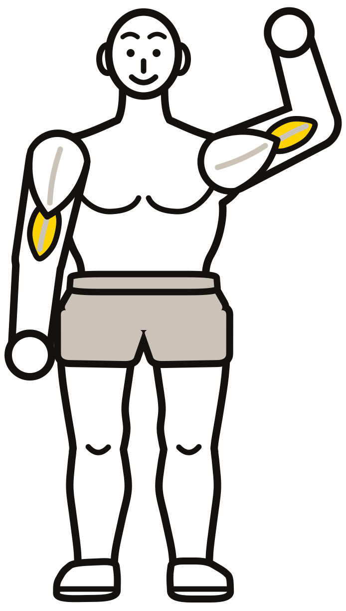
- 1Entrenar sin un planpág. 3
- 2No subir las cargaspág. 4
- 3Mala técnica y recorridos a mediaspág. 5
- 4Comer poca proteínapág. 6
- 5Dormir pocopág. 7
- 6Hacer abdominales para quemar la panzapág. 8
- 7No medir tu progreso (y rendirte antes de tiempo)pág. 9
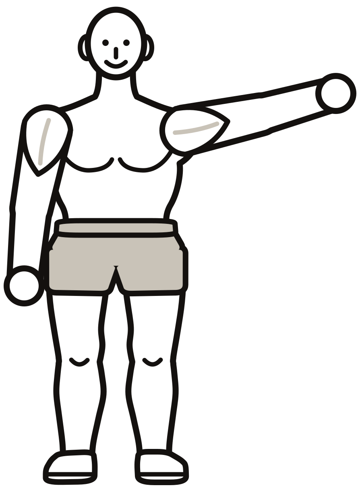
Lee un error por día y arregla ese. En una semana entrenas distinto.
IMPORTANTEEsta guía es educativa. Si tienes una lesión, dolor o una enfermedad, consulta con un profesional de la salud antes de cambiar tu entrenamiento o tu alimentación.
Los 7 errores · Entrena con Tor · Guía gratis2
Entrena con TorError 1
1Error 1
Entrenar sin un plan
Por qué te frena
Si cada día haces lo que se te ocurre, o la rutina del video del momento, nunca repites un ejercicio lo suficiente como para mejorar en él. Sin repetir no puedes subir el peso, y sin subir el peso no hay progreso.
Señales de que lo cometes
- Cambias de rutina casi cada semana.
- Llegas al gimnasio sin saber qué vas a hacer.
- Hay músculos que entrenas mucho y otros casi nunca (¿las piernas?).
Cómo arreglarlo
- Elige un plan de 3 a 6 días y síguelo por lo menos 8 semanas.
- Repite los mismos ejercicios cada semana: así puedes ver si mejoras en ellos.
- Entrena cada músculo 2 veces por semana.
- Escribe antes de ir qué vas a hacer hoy (ejercicios, series y repeticiones).
LA CIENCIALos programas que funcionan tienen progresión planificada (ACSM, 2009), y entrenar cada músculo 2 veces por semana hace crecer más que 1 sola vez (Schoenfeld y cols., 2016). Cambiar algún ejercicio de vez en cuando no es malo; el problema es no tener un plan que te deje subir.
Un plan normal que sigues le gana a un plan perfecto que cambias cada semana.
Los 7 errores · Entrena con Tor · Guía gratis3
Entrena con TorError 2
2Error 2
No subir las cargas
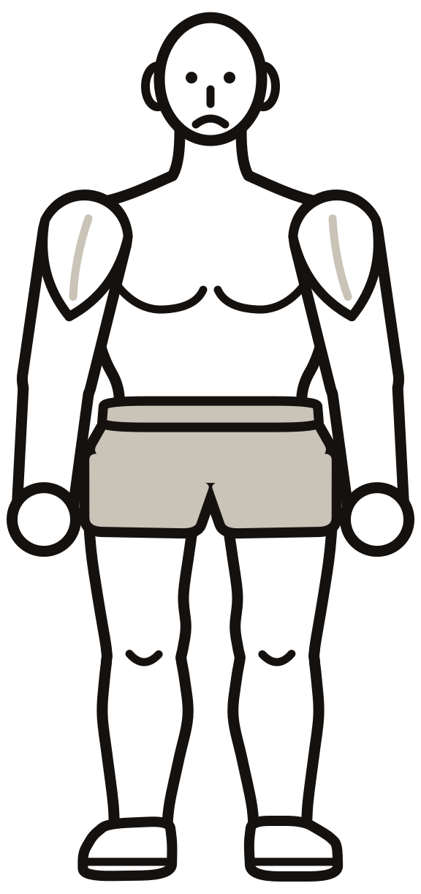
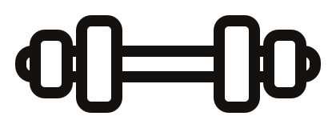
Por qué te frena
Levantas los mismos 10 kg desde hace meses. Tu cuerpo ya se adaptó a eso: no tiene ninguna razón para cambiar. El músculo crece cuando le pides un poco más de lo que ya sabe hacer.
Señales de que lo cometes
- Usas los mismos pesos de siempre.
- No anotas nada y no recuerdas qué levantaste la semana pasada.
- Terminas las series cómodo, como si pudieras hacer muchas más.
Cómo arreglarlo: la doble progresión
- Con el mismo peso, suma repeticiones semana a semana hasta llegar al tope de tu rango (por ejemplo, 12) en todas las series.
- Cuando lo logras con buena técnica, sube el peso (1 a 2,5 kg por mancuerna, o el salto más chico de la máquina) y vuelve al piso del rango (por ejemplo, 8).
- Termina cada serie con 1 a 3 repeticiones de sobra: exigente, pero limpia.
- Anota peso y repeticiones de cada serie. Sin registro no hay progresión.
LA CIENCIASubir el peso o subir las repeticiones dan resultados parecidos; lo que no funciona es no subir nada (Plotkin y cols., 2022). La sobrecarga progresiva es la base de cualquier programa de fuerza (ACSM, 2009).
Una repetición más que la semana pasada ya es progreso.
Los 7 errores · Entrena con Tor · Guía gratis4
Entrena con TorError 3
3Error 3
Mala técnica y recorridos a medias
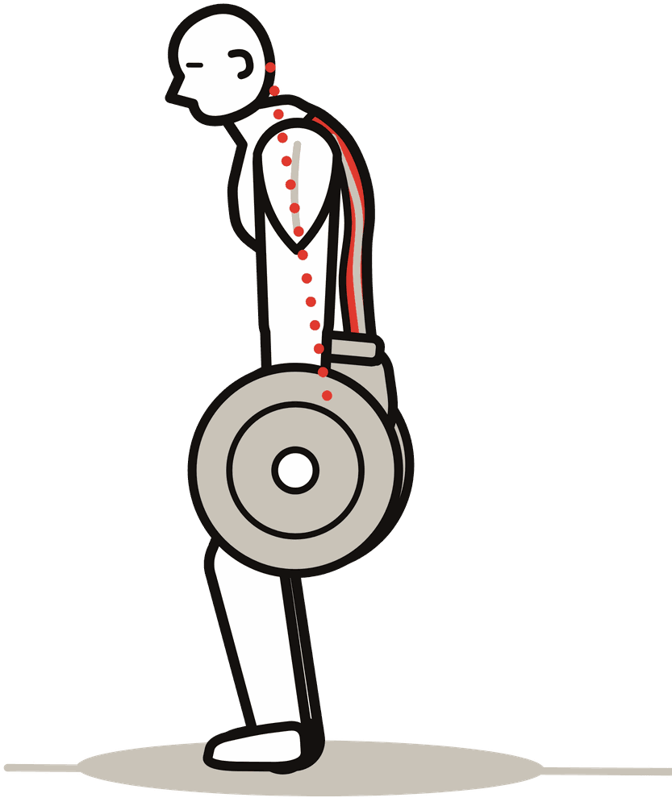
Espalda curvada
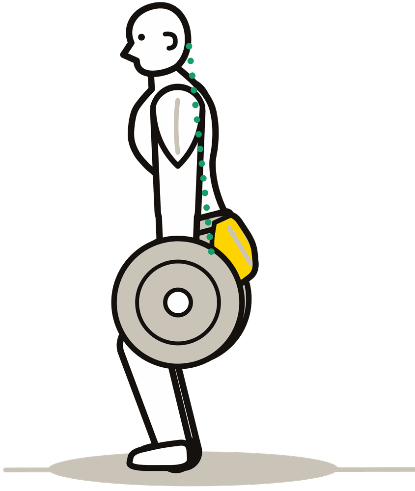
Espalda neutra
Por qué te frena
Mover más peso con mala técnica no es progreso: el músculo que quieres trabaja menos, otro hace el trabajo y aumenta el riesgo de lastimarte. Y bajar solo la mitad del recorrido deja crecimiento sobre la mesa.
Señales de que lo cometes
- Te balanceas o das tirones para subir el peso.
- Bajas a medias (sentadillas cortas, flexiones de 5 cm).
- Sientes el ejercicio en el cuello o la zona lumbar, no en el músculo.
Cómo arreglarlo
- Baja el peso en unos 2 segundos, sin rebotar abajo.
- Usa todo el recorrido que tu cuerpo permita sin dolor.
- Si te balanceas, baja el peso un 10 a 20 % y vuelve a subir desde ahí.
- Grábate de perfil una serie por semana y compárala con el ejercicio bien hecho.
LA CIENCIAEntrenar con el recorrido completo da igual o más fuerza y músculo que hacerlo a medias (Pallarés y cols., 2021).
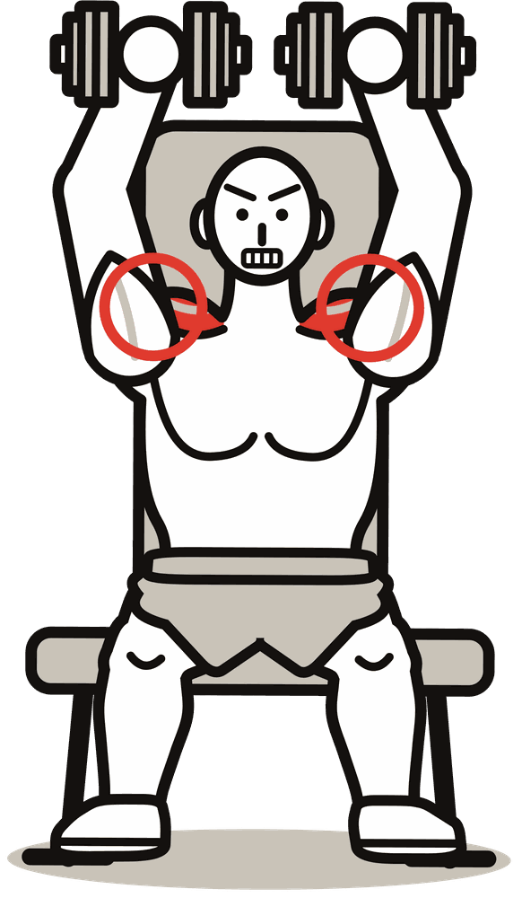
Hombros encogidos
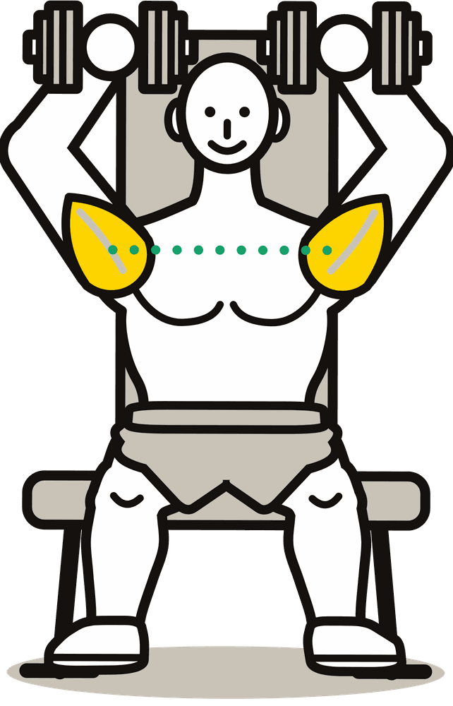
Hombros abajo
Los 7 errores · Entrena con Tor · Guía gratis5
Entrena con TorError 4
4Error 4
Comer poca proteína
Por qué te frena
El entrenamiento es la señal; la proteína es el material. Si no comes suficiente, el cuerpo recibe la orden de construir músculo pero no tiene con qué.
Señales de que lo cometes
- Tu desayuno es pan y café, sin huevo, yogur ni nada parecido.
- Solo una comida del día tiene una buena porción de proteína.
- No tienes idea de cuánta proteína comes.
Cómo arreglarlo
- Come entre 1,6 y 2,2 g por kilo de tu peso al día. Con 70 kg: unos 110 a 155 g.
- Repártela en 3 a 5 comidas, con 20 a 40 g en cada una.
- Fuentes fáciles: pollo, huevos, pescado o atún, carne magra, yogur griego, legumbres y tofu.
| Ejemplo para 70 kg | Comida | Proteína |
|---|
| Desayuno | 3 huevos + 150 g de yogur griego | ≈ 34 g |
| Almuerzo | 150 g de pollo + arroz + verduras | ≈ 46 g |
| Cena | 150 g de pescado o atún + papa + ensalada | ≈ 39 g |
| Total | | ≈ 119 g |
LA CIENCIAUn análisis de 49 estudios encontró que la ganancia de músculo con pesas mejora al subir la proteína hasta unos 1,6 g por kilo al día, y que algunas personas se benefician de llegar a 2,2 g (Morton y cols., 2018).
Los 7 errores · Entrena con Tor · Guía gratis6
Entrena con TorError 5
Por qué te frena
El músculo no crece mientras entrenas: crece mientras te recuperas, y gran parte de esa recuperación pasa de noche. Si duermes poco, rindes menos en el gimnasio y aprovechas peor lo que entrenaste.
Señales de que lo cometes
- Duermes menos de 7 horas casi todos los días.
- Te quedas con el celular en la cama hasta tarde.
- Llegas al gimnasio sin fuerza y con sueño.
Cómo arreglarlo
- Apunta a 7 a 9 horas cada noche.
- Ponte una alarma para acostarte, no solo para levantarte.
- Deja el celular fuera de la cama 30 minutos antes de dormir.
- Acuéstate y levántate a la misma hora, también el fin de semana.
- Nada de café después de media tarde.
LA CIENCIAUna sola noche sin dormir bajó un 18 % la fabricación de proteína muscular al día siguiente (Lamon y cols., 2021).
LA CIENCIALos expertos en sueño recomiendan a los adultos dormir 7 horas o más por noche (Watson y cols., 2015).
Dormir también es entrenar. Es la parte en la que creces.
Los 7 errores · Entrena con Tor · Guía gratis7
Entrena con TorError 6
6Error 6
Hacer abdominales para quemar la panza
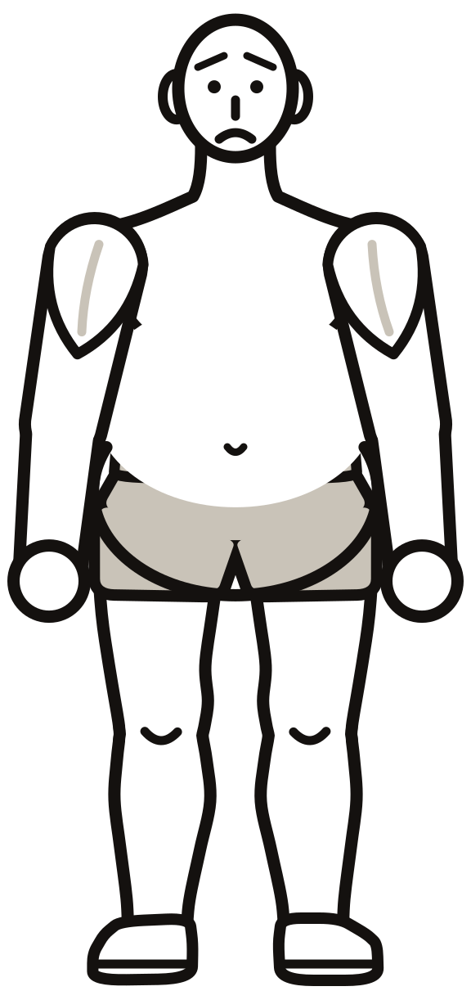
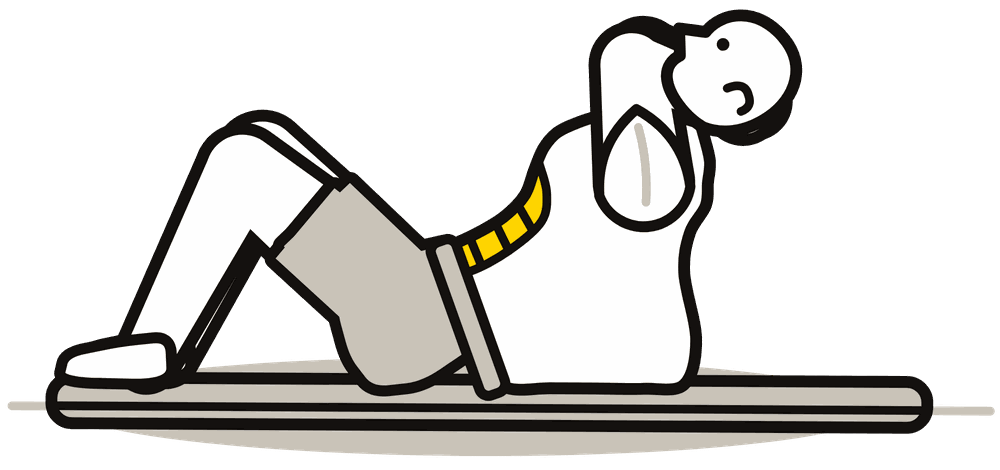
Por qué te frena
No se puede elegir de dónde bajar grasa. Los abdominales fortalecen el músculo, pero la grasa que lo tapa baja con el cuerpo entero: comiendo un poco menos de lo que gastas y entrenando todo el cuerpo.
Señales de que lo cometes
- Haces cientos de abdominales al día para "marcar".
- Tu rutina es solo cardio y abdominales.
- No sabes cuánto comes.
Cómo arreglarlo
- Para bajar grasa, come unas 300 a 500 kcal menos de lo que gastas, sin dietas extremas.
- Mantén la proteína alta (error 4): así cuidas el músculo mientras bajas.
- Entrena todo el cuerpo con pesas y camina más cada día.
- Haz abdominales como cualquier músculo: 2 a 3 series al final, para que estén fuertes y se marquen cuando baje la grasa.
LA CIENCIAEn un estudio, 6 semanas de ejercicios de abdomen no bajaron la grasa del abdomen comparado con no hacerlos (Vispute y cols., 2011).
Los abdominales se hacen en el gimnasio, pero se marcan en la cocina.
Los 7 errores · Entrena con Tor · Guía gratis8
Entrena con TorError 7
7Error 7
No medir tu progreso (y rendirte antes de tiempo)
Por qué te frena
En el espejo los cambios tardan, y como te ves todos los días, no los notas. Si no mides nada, a las 4 semanas crees que no pasa nada y abandonas justo cuando empezaba a funcionar.
Señales de que lo cometes
- Te pesas todos los días y te frustras cuando sube.
- No tienes fotos de cómo empezaste.
- No sabes cuánto levantabas hace un mes.
Cómo arreglarlo
- Anota los pesos de cada sesión: es la prueba más rápida de que avanzas.
- Sácate una foto cada 4 semanas, con la misma luz, ropa y posición.
- Mide cintura y brazo cada 2 a 4 semanas.
- Si te pesas, mira el promedio de la semana, no el número de un día.
- Date por lo menos 12 semanas antes de juzgar un plan.
LA CIENCIAEn principiantes, el músculo ya crece de forma medible a las 3 o 4 semanas de entrenar (Seynnes y cols., 2007), aunque en el espejo se note más tarde.
LA CIENCIARegistrar lo que haces se asocia con mejores resultados: en los estudios de pérdida de peso, quienes se anotan más, logran más (Burke y cols., 2011).
Los 7 errores · Entrena con Tor · Guía gratis9
Entrena con TorTu checklist
Para imprimir
Tu checklist de los 7 arreglos
Marca cada semana los que cumpliste. Cuando tengas los 7 marcados cuatro semanas seguidas, ya no estás frenado.
| El arreglo | Sem. 1 | Sem. 2 | Sem. 3 | Sem. 4 |
|---|
| 1 · Seguí mi plan, sin cambiarlo | | | | |
| 2 · Subí repeticiones o peso en algún ejercicio | | | | |
| 3 · Bajé lento y con el recorrido completo | | | | |
| 4 · Llegué a mi proteína casi todos los días | | | | |
| 5 · Dormí 7 horas o más casi todas las noches | | | | |
| 6 · Entrené todo el cuerpo (no solo abdomen) | | | | |
| 7 · Anoté mis pesos (y foto cada 4 semanas) | | | | |
Mi proteína del día
Mi peso: ______ kg × 1,6 = ______ g al día
En ____ comidas = ______ g por comida
Mis medidas de inicio
Fecha: ____________
Peso: ______ kg · Cintura: ______ cm · Brazo: ______ cm
No tienes que arreglar los 7 hoy. Empieza por uno y súmale otro cada semana.
Los 7 errores · Entrena con Tor · Guía gratis10
Entrena con TorTu primera semana
Manos a la obra
Tu primera semana sin errores
Una sola tarea por día. Ninguna te lleva más de 15 minutos fuera del entrenamiento.
LunesElige tu plan y escribe qué días entrenas y qué haces cada día (error 1).
MartesCalcula tu proteína (tu peso × 1,6) y decide qué proteína va en cada comida (error 4).
MiércolesEntrena y anota el peso y las repeticiones de cada serie. Deja 2 o 3 repeticiones de sobra (errores 2 y 7).
JuevesPon tu alarma para acostarte y deja el celular fuera de la cama (error 5).
ViernesGrábate de perfil una serie y revisa: ¿bajas lento?, ¿recorrido completo?, ¿sin balanceo? (error 3).
SábadoFoto y medidas de inicio: cintura, brazo y peso. Guárdalas en una carpeta (error 7).
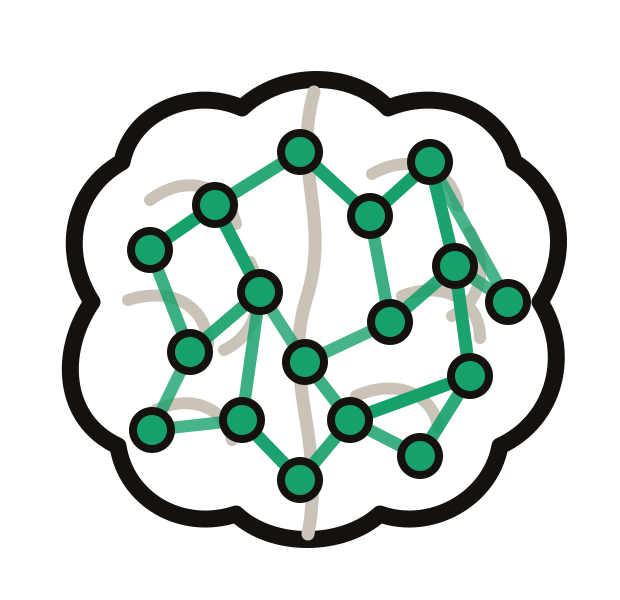
DomingoDescansa y marca tu checklist. Si ves abdominales en tu plan, que sean al final, no todo el plan (error 6).
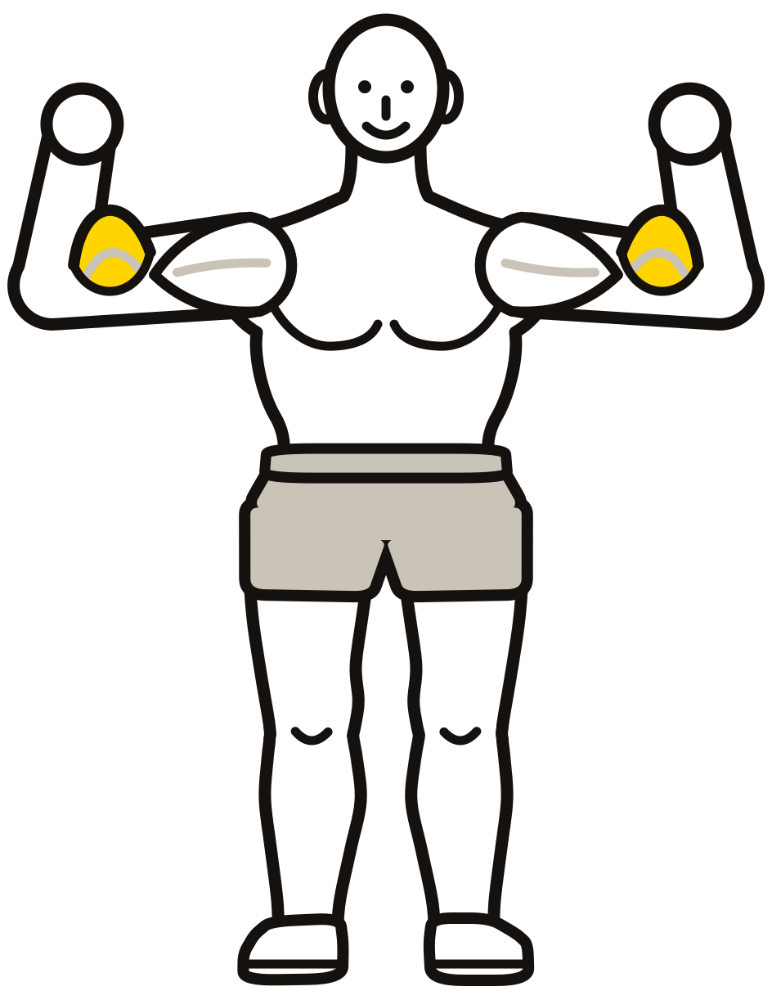
Cuéntame cómo te fue. Escríbeme en Instagram o TikTok de Entrena con Tor con la palabra "SEMANA 1" y dime cuál de los 7 errores te costó más.
Los 7 errores · Entrena con Tor · Guía gratis11
Entrena con Tor¿Y ahora?
El siguiente paso
¿Quieres el plan día por día?
PROGRAMARutina para principiantes
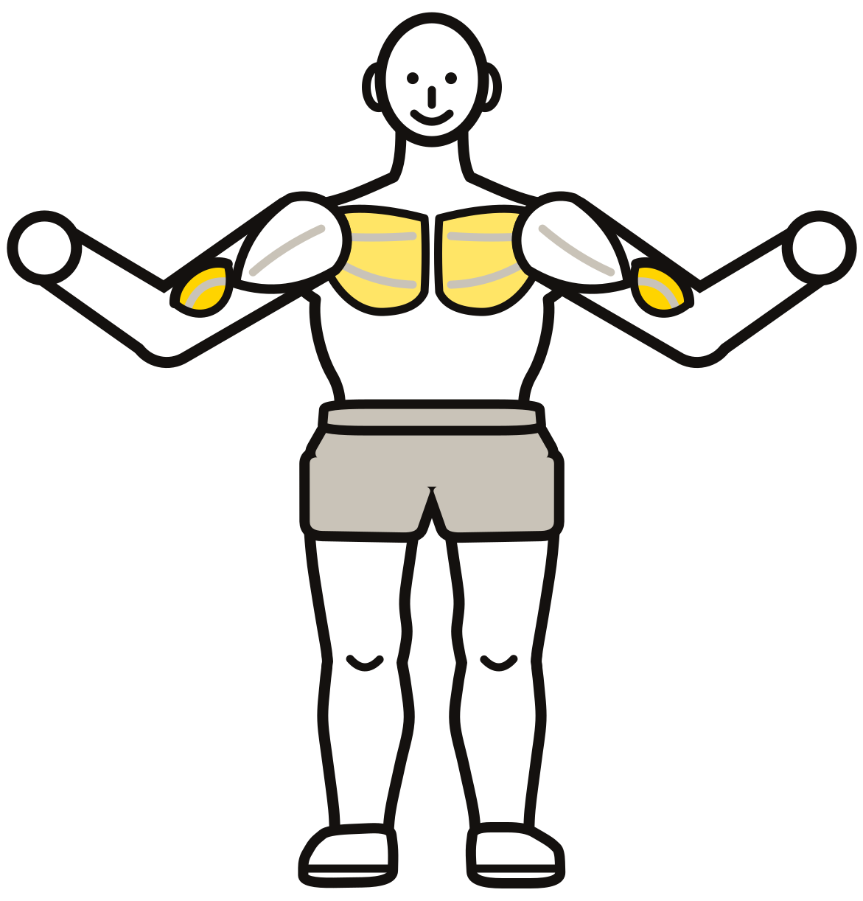
Rutina para principiantes · 12 semanas
Los 7 arreglos de esta guía, convertidos en un plan: qué hacer cada día, cuántas series y repeticiones, cómo subir el peso y tu registro para anotar.
- 3 rutinas: pecho y hombro, espalda y bíceps, piernas y glúteos.
- Versión de 6 o 5 días, con abdominales cada día.
- Cada ejercicio dibujado con Tor, con sus claves.
Encuéntrala en el link de mi perfil.
Sígueme para ver cada ejercicio explicado
YouTube · @eltorvick
Instagram · Entrena con Tor
TikTok · Entrena con Tor
Los estudios de esta guía
- American College of Sports Medicine (2009). Progression models in resistance training for healthy adults. Med Sci Sports Exerc, 41(3), 687–708.
- Burke LE, Wang J, Sevick MA (2011). Self-monitoring in weight loss: a systematic review of the literature. J Am Diet Assoc, 111(1), 92–102.
- Lamon S y cols. (2021). The effect of acute sleep deprivation on skeletal muscle protein synthesis and the hormonal environment. Physiol Rep, 9(1), e14660.
- Morton RW y cols. (2018). A systematic review, meta-analysis and meta-regression of the effect of protein supplementation on resistance training-induced gains in muscle mass and strength. Br J Sports Med, 52(6), 376–384.
- Pallarés JG y cols. (2021). Effects of range of motion on resistance training adaptations: a systematic review and meta-analysis. Scand J Med Sci Sports, 31(10), 1866–1881.
- Plotkin D y cols. (2022). Progressive overload without progressing load? The effects of load or repetition progression on muscular adaptations. PeerJ, 10, e14142.
- Schoenfeld BJ, Ogborn D, Krieger JW (2016). Effects of resistance training frequency on measures of muscle hypertrophy. Sports Med, 46(11), 1689–1697.
- Seynnes OR, de Boer M, Narici MV (2007). Early skeletal muscle hypertrophy and architectural changes in response to high-intensity resistance training. J Appl Physiol, 102(1), 368–373.
- Vispute SS y cols. (2011). The effect of abdominal exercise on abdominal fat. J Strength Cond Res, 25(9), 2559–2564.
- Watson NF y cols. (2015). Recommended amount of sleep for a healthy adult. Sleep, 38(6), 843–844.
© Torvick · Entrena con Tor. Guía gratis: compártela con quien quieras, tal cual está.
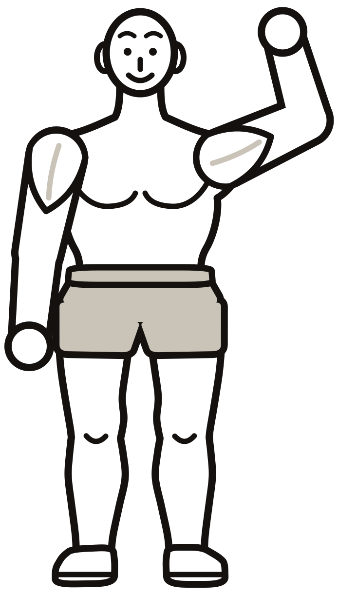
¡Nos vemos en el próximo video!
Los 7 errores · Entrena con Tor · Guía gratis12